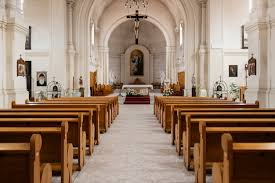

Bem-vindo à Paróquia Santo Antônio
venha nos conhecer.



bem-vindo a paróquia santo eutanio
quem nós somos
A Igreja Matriz de Santo Antônio, em Rio Claro, tem uma história rica que remonta à década de 1930, quando a antiga capela foi demolida para dar lugar à construção da nova matriz. Antes, o atendimento religioso era realizado por padres da Paróquia São José Operário e, posteriormente, pelas irmãs franciscanas. A construção da atual Igreja Matriz, com seu presbitério e cobertura, foi um processo gradual, contando com a participação de diversos padres e a contribuição da comunidade local. A igreja também possui uma Sede Social Católica, onde funcionou um cinema por muitos anos.
nossa missão
em como missão principal a evangelização e a assistência espiritual aos fiéis da comunidade, seguindo o exemplo de Santo Antônio, conhecido por sua pregação e dedicação aos mais necessitados. A paróquia promove atividades como missas, celebrações, catequese e ações sociais, buscando fortalecer a fé e promover a união entre os membros da comunidade.
linha do tempo
linha do tempo
- 1930: Demolição da antiga capela para construção da nova matriz.
- Década de 1930: Atendimento religioso realizado por padres da Paróquia São José Operário e irmãs franciscanas.
- Décadas seguintes: Construção gradual da Igreja Matriz, com participação da comunidade e diversos padres.
- Funcionamento do cinema: Sede Social Católica abriga um cinema por muitos anos.
- Atualidade: Igreja Matriz realiza missas, celebrações, catequese e ações sociais, promovendo a fé e união da comunidade.